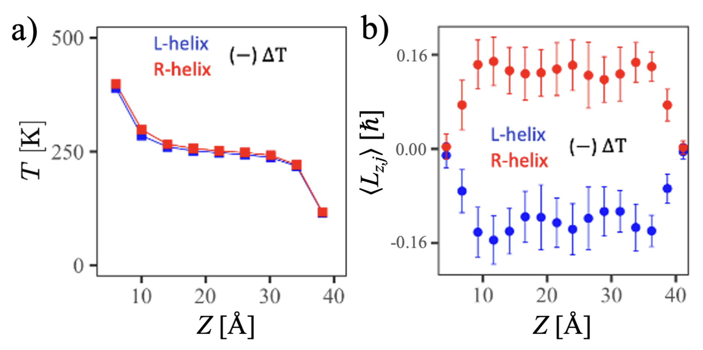

Authors: Jichen Feng, Ethan Abraham, Joseph Subotnik, Abraham Nitzan
Venue: arXiv preprint arXiv:2508.06738 (2025)

We investigate how driven chiral molecular systems can generate angular momentum in nuclear motion under nonequilibrium forcing, including thermal gradients. Using theory and numerical simulations across several chiral models, we show that both mechanical and thermal driving can induce sizable vibrational angular momentum—comparable in scale to optically driven chiral phonons—highlighting a general symmetry-breaking route to angular-momentum generation.
Fig. 1: The results displayed above show numerical simulation results for the harmonic helical chain model with polymerization N = 201. The generated angular momentum strongly depends on the temperature difference ΔT (left) that induces the heat current JH and only weakly on the average temperature (right).
Fig. 2: The angular momentum generation phenomenon is robust and remains in the double helix model. Above shows the temperature and angular momentum profile in the system, with different handedness.
@misc{feng2025nuclearangularmomentum,
title = {Nuclear Angular Momentum Generation in Thermally Driven Chiral Systems},
author = {Feng, Jichen and Abraham, Ethan and Subotnik, Joseph and Nitzan, Abraham},
year = {2025},
eprint = {2508.06738},
archivePrefix= {arXiv},
primaryClass = {physics.chem-ph},
url = {https://arxiv.org/abs/2508.06738}
}